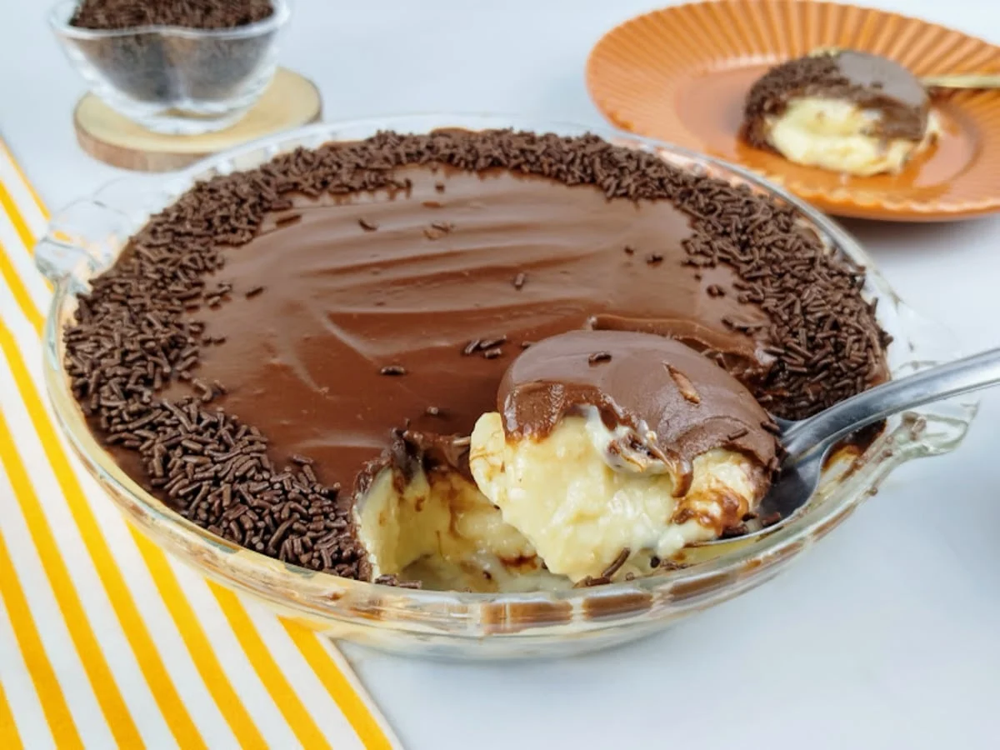

Sobremesas
As sobremesas são o toque final perfeito para qualquer refeição. Aqui você encontrará uma seleção de doces irresistíveis que vão encantar seu paladar. Explore as opções e descubra novas ideias para suas refeições pós-principal.
Categorias

Cheesecake de Frutas Vermelhas
Uma opção elegante que une a base crocante de biscoito com a cremosidade do queijo e o azedinho da calda de frutas.
- Ingredientes: Biscoito maisena triturado, manteiga, cream cheese, açúcar, ovos e uma calda feita com amora, framboesa ou morango.
- Preparo: Monte a base de biscoito em uma forma de fundo removível. Bata o cream cheese com açúcar e ovos e despeje por cima. Asse em forno baixo até firmar. Depois de frio, cubra com a calda de frutas vermelhas.

Bombom de Travessa
Uma sobremesa que enche os olhos e combina camadas de creme branco aveludado, frutas frescas e uma cobertura generosa de chocolate.
- Ingredientes: Leite condensado, creme de leite, morangos frescos (ou uvas), chocolate meio amargo e um toque de essência de baunilha.
- Preparo: PFaça um brigadeiro branco com o leite condensado e creme de leite. Coloque em uma travessa e cubra com os morangos inteiros. Finalize com uma ganache de chocolate por cima e leve à geladeira até firmar.

Petit Gâteau com Sorvete
Mantemos esta opção para quem não dispensa um bolinho quente com recheio líquido, criando o contraste perfeito com o gelado do sorvete.
- Ingredientes: Chocolate meio amargo, manteiga, ovos, açúcar, farinha de trigo e sorvete de creme.
- Preparo: Derreta o chocolate com a manteiga. Misture os demais ingredientes e asse por apenas 7 minutos em forno bem quente. O objetivo é que o bolinho asse por fora e continue líquido por dentro.